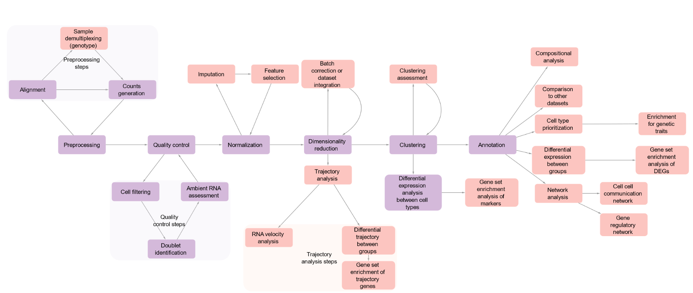

The Neuro and McGill Single Cell Club
Single Cell Workshop - From FASTQ to Cell type Annotations
Our workshops are held in person in May or June in Montreal. Look out for the 2026 workshop at https://singlecellclub.openscience.mcgill.ca/
This side contains the computational analysis section of the Single Cell Workshops for 2023, 2024 and 2025.
The workflow in 2023 uses Seurat Version 4 and this was updated to Version 5 in 2024 and 2025.
What you'll find here:
- R notebooks
- Complete analysis workflows starting with the outputs from Cell Ranger (or other gene alignement UMI count pipeline)
- Slides to accompany the workbooks.
Use the sidebar to find the workbook from previous years!